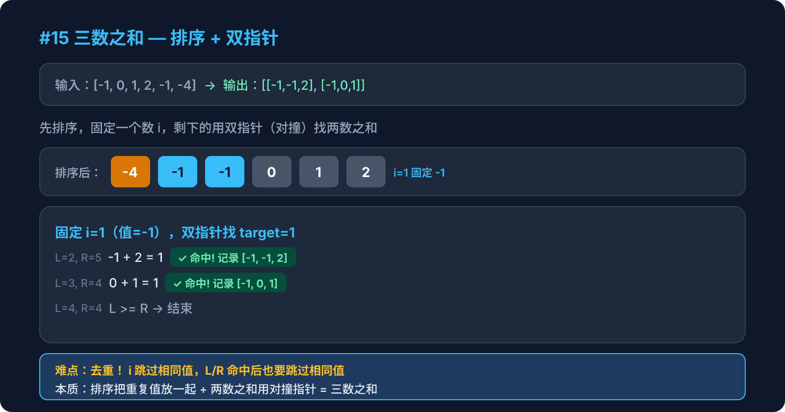

Hot 100 · 双指针 · 第2周

给定一个整数数组 nums，找出所有满足 a + b + c = 0 的三元组 [a, b, c]，答案中不能包含重复的三元组。
输入：nums = [-1, 0, 1, 2, -1, -4]
输出：[[-1, -1, 2], [-1, 0, 1]]暴力三层循环是 O(n³)，怎么优化？
i，对于每个 nums[i]，用对撞双指针在 i+1 到末尾找两个数，使三数之和为 0。点击每一步展开详细说明
nums.sort((a, b) => a - b)
排序是整个算法的基础：让双指针可以根据 sum 的大小移动方向，同时让相同元素相邻，方便去重。
例：[-1, 0, 1, 2, -1, -4] → [-4, -1, -1, 0, 1, 2]
外层循环固定第一个数 nums[i]，问题变成：在 i+1 到 n-1 范围内找两个数之和等于 -nums[i]。
剪枝优化：如果 nums[i] > 0，后面的数都比它大，三数之和不可能为 0，直接 break。
在已排序的子数组中，左指针从 i+1 开始，右指针从末尾开始，向中间逼近。
计算 sum = nums[i] + nums[left] + nums[right]：
sum < 0 → 和太小，left++ 让和变大sum > 0 → 和太大，right-- 让和变小sum === 0 → 找到一组答案！找到答案后，记录 [nums[i], nums[left], nums[right]]。
然后跳过 left 和 right 的重复值（见下面去重详解），最后 left++、right-- 继续搜索。
为什么需要去重？怎么去重？
function threeSum(nums) {
nums.sort((a, b) => a - b)
const result = []
for (let i = 0; i < nums.length - 2; i++) {
if (nums[i] > 0) break // 剪枝：最小值 > 0，不可能三数之和为 0
if (i > 0 && nums[i] === nums[i - 1]) continue // i 层去重
let left = i + 1, right = nums.length - 1
while (left < right) {
const sum = nums[i] + nums[left] + nums[right]
if (sum < 0) {
left++
} else if (sum > 0) {
right--
} else {
result.push([nums[i], nums[left], nums[right]])
while (left < right && nums[left] === nums[left + 1]) left++ // left 去重
while (left < right && nums[right] === nums[right - 1]) right-- // right 去重
left++
right--
}
}
}
return result
}| 维度 | 复杂度 | 说明 |
|---|---|---|
| 时间 | O(n²) | 排序 O(n log n) + 外层 O(n) × 内层双指针 O(n) |
| 空间 | O(1) | 不算排序空间和返回结果，只用了指针变量 |
nums[i]，在剩余数组中做一次两数之和（用双指针而非哈希表，因为数组已排序）。